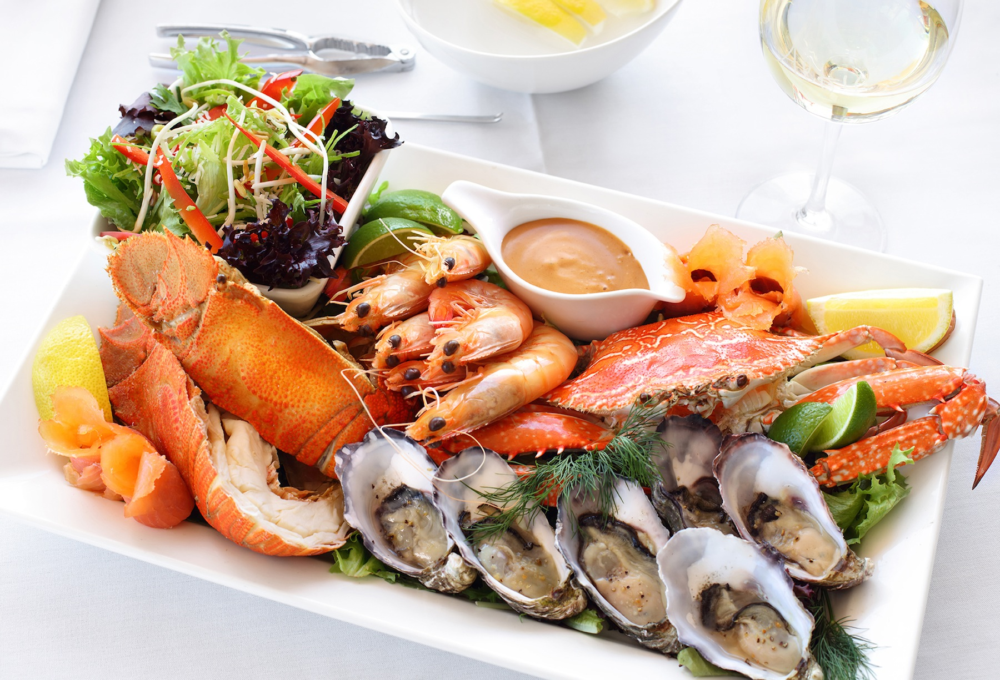
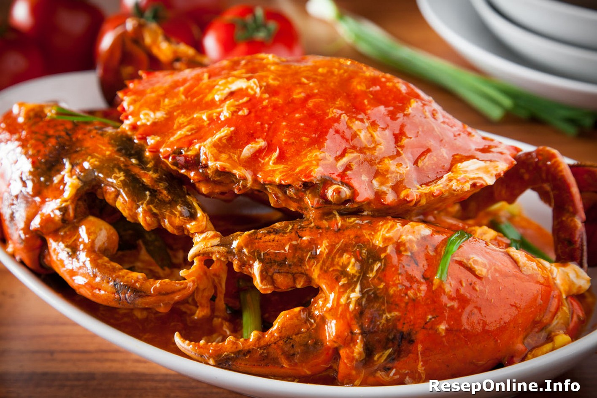
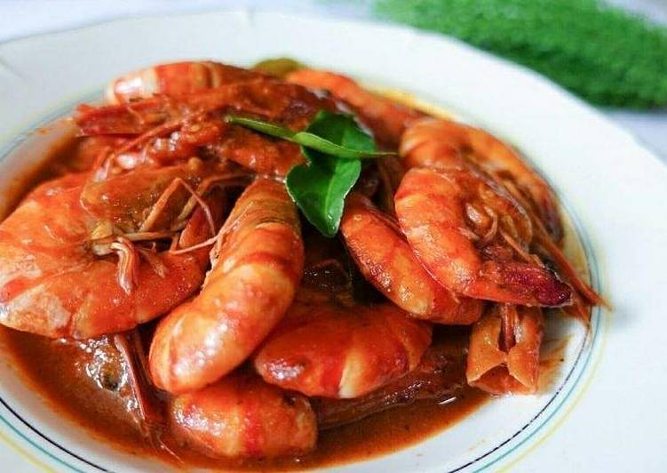
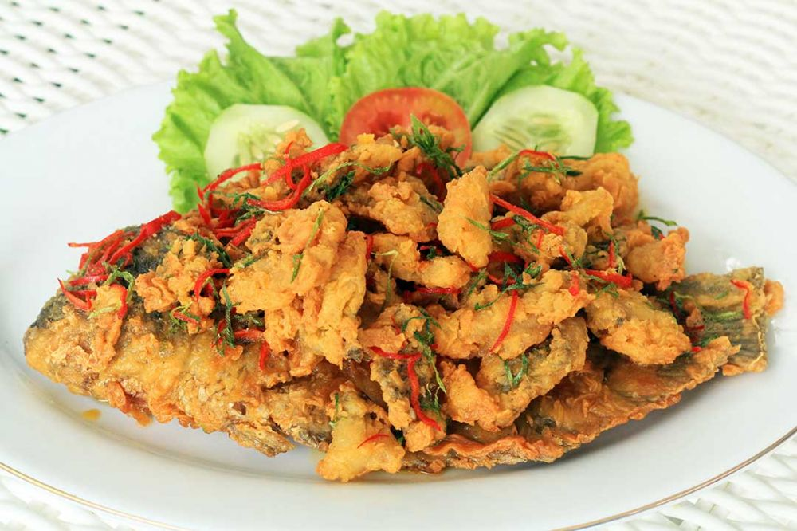
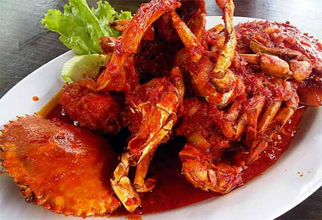
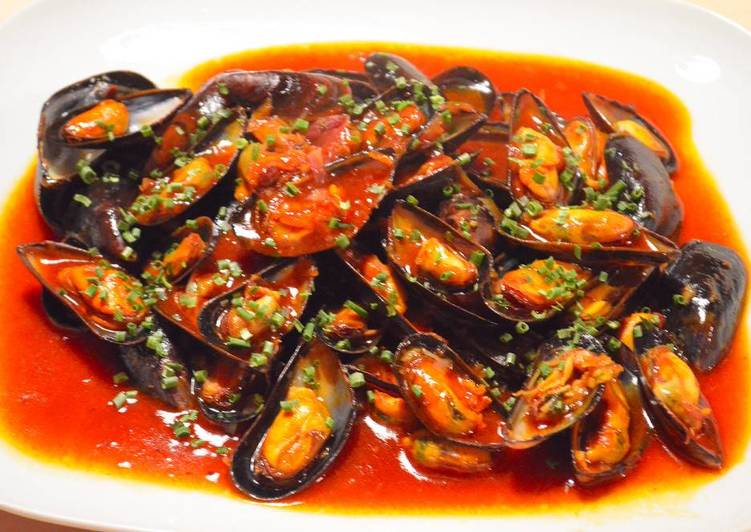

Kepiting Asam Manis

Lobster Sous Padang
Kerang Dara Saus Padang
| Home | Menu | Profile | Bantuan |
|  |
| Seafood adalah sebutan untuk makanan berupa hewan dan tumbuhan laut yang ditangkap, dipancing, diambil dari laut maupun hasil budidaya. Burung dan burung air yang terdapat di laut tidak termasuk ke dalam makanan laut. Di beberapa negara, istilah "makanan laut" juga mencakup mamalia laut, ikan dan kerang yang ditangkap atau dikumpulkan nelayan dari air tawar (danau dan sungai). Makanan laut merupakan sumber protein, lemak, vitamin, dan mineral (seng, zat besi, selenium, magnesium, dan iodium). |
|  Kepiting Saus Tiram |
 Udang Saus Padang |
 Cumi Saus Telur Asin | \
|  Kepiting Asam Manis |
Lobster Sous Padang |
 Kerang Dara Saus Padang |
| Untuk Menu Selanjutnya |
| Trimakasih |